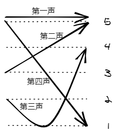
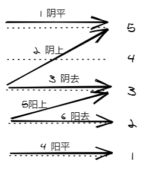

学汉语，其中一道坎就是声调。只会北方官话的人学声调更多的南方方言，如粤语，也面临类似的困难。
多数西方语言属于印欧语系，没有声调的概念。音调的变化影响句子的语气（所以叫语调 intonation），不影响单词的含义。汉语的北方官话只有四个声调，而多数南方方言则保留了更多声调。像广州话，有九声六调。
如果你不想看声调背后的历史渊源，只想直接学粤语声调，可以只阅读 五度标记法 和 九声六调 两个章节。但个人认为，了解这些有助于理解和记忆。
辨音
语言区别意义的最小声音单位，术语叫音位。一个音位允许多种不同发音，语言使用者心理上把它们当做同一发音，甚至完全没有察觉有什么不同。母语里不区分的音，或者直接没有的音，过了学语言的关键期，甚至是成年之后再来学，就比较难区分。
这种例子可以举很多：
- 接触英语晚的同胞，比较难区分 s [s] （清齿龈擦音）和 th [θ] （清齿擦音）；
- 学普通话晚的南方人，比较难区分 z [ts] （不送气清齿龈塞擦音），c [tsʰ] （送气清齿龈塞擦音），s [s] （清齿龈擦音）和 zh [ʈʂ] （不送气清卷舌塞擦音），ch [ʈʂʰ] （送气清卷舌塞擦音），sh [ʂ]（清卷舌擦音）两组音，也就是一般所说的 平舌音 和 卷舌音；
- 部分方言不区分 l [l] （齿龈边音）和 n [n] （齿龈鼻音）；
- 当然还有非声调语言的母语者，很难区分声调；声调少的母语者，难区分母语里没有的声调。
母语的学习，在婴幼儿这个听力最敏锐的时期（是的，耳蜗毛细胞的数量出生即巅峰，往后一辈子只会减少不能再生，所以要好好保护听力），加上没有既有语言的干扰，光凭模仿就能学得非常好，不需要任何发音、语法的概念。非母语的学习者，过了关键期再学，用沉浸式的方法多听多说，还是可以学得很好的。只是听力可能没有那么灵敏了，大脑中也有了母语的干扰，需要更用功，花更多时间。
无论如何，关键在于辨别不同的音，包括听觉上区分不同的音，和区分不同音的发音位置和技巧。能辨别的音，充分练习后基本上就能发出来。 先天条件的差异，可能会让部分人更难发出特定的音，但不至于彻底无法发出。一般人遇到的困难，更多是从未发过的音，受母语相近音的路径依赖干扰，以及练习不够。这就好像身体素质差、没有经过训练、有错误的手势会影响打篮球投篮命中，但极少人生理上就无法投篮。
这时如果学过发音规则和技巧，我认为对辨别相近音和矫正发音是有帮助的。只是这些知识只能减轻负担，不能代替努力；多听多说，特别是听自己说然后校正，是必经之路。所以懂很多语言知识但是不努力，跟很努力但没学过相关知识相比，反倒是后者比较有可能成。
今天先整理粤语九声六调的内容。后续再尝试整理粤语拼音和正字的内容。
五度标记法
声调，是指附着在音节上的 抑扬（音调、音高变化）和 顿挫（辅音韵尾的停顿变化）。
先说音高。
可能由于印欧语系很少使用声调，现在国际通用的音高调值标记的办法，是我国语言学家赵元任发明的 五度制调值标记法，已经成为国际音标标准的一部分。
这个方法模仿五线谱，以 1、2、3、4、5 标记说话时的相对音高，以 1 为最低，5 为最高。
例如用五度标记法来标记普通话的四声（阴平，阳平，上声，去声）：

因为普通话声调四个调型不重复，没有必要标相对音高，可以简化用 ¯ 、ˊ 、ˇ 、ˋ 分别表示。
但在别的语言 / 方言可能会出现相同调型，这时就需要竖标来标明音高，同样是水平声调，从高到低分别是： ˥， ˦， ˧， ˨， ˩ 。这样普通话四声就可以标记为： ˥，˧˥，˨˩˦，˥˩ 。考虑到这些非 ascii 字母不好输入，有些环境不一定能正确显示，所以更多的时候，会用音高数字标明：55，35，214，51。
需要注意的是，这些都是相对音高，调值的高低是跟其他音比较之后得出的。以广州话的 阴平（55）和 阴去（33）为例，可能一个男生发出的 55 跟一个女生的 33 绝对音高差不多，但是女生发出的 55 更高，对比之下就会发现女生前面发的是 33。没有比较单发出一个 周 （zau55）是没办法跟 皱 （zau33）区分的，需要有其他字的音高做参考。
声调演变
有了标记音高的办法，然后我们才能来讨论声调。
上古汉语
大部分语言学家认为汉语的声调是后起的，战国及之前的原始汉语没有声调，而以比现在更复杂的辅音系统区分现在不同声调的字。之后漫长的岁月里，逐渐从一些复杂的辅音演变出声调，到魏晋南北朝稳定为中古四声。
由于汉字是表意文字，古代又没有准确的注音手段，这方面的研究仍然存在一些争议。
中古四声
中古汉语（南北朝至唐宋之间的汉语）有四个声调，分别为 平、上、去、入。四声可能在上古汉语已经存在，但最早由南朝士子提出。梁武帝萧衍问周捨何谓四声，周捨答：『天子圣哲』。其中 『天』『平』都是平声，『子』『上』都是上声，『圣』『去』都是去声，『哲』『入』都是入声。
平上去入 四个字，既是刚好发 平上去入 四声，也一定程度描述四声的特点，提出时应该有经过特意挑选。日本遣唐僧人空海《文镜秘府论》有言：『平声哀而安，上声厉而举，去声清而远，入声直而促』；明朝僧人释真空在《玉钥匙歌诀》提到：『平声平道莫低昂，上声高呼猛烈强，去声分明哀远道，入声短促急收藏』。陈寅恪推测四声可能为 中平调、高平调、低平调、促调。可惜古代没有记录调值的手段，只能从历代韵书推断同声字，无法考究具体调值。
四声流变
语音的演变没有停留，四声继续发生变化：
平分阴阳
四声根据开头辅音的清浊（辅音发音时声带是否震动），清为阴（高亢），浊为阳（低沉），各分为两声。分化程度在现代汉语方言中各不相同。广州话四声都分阴阳 ，烟台话继续不分阴阳，北京话只有平声分阴阳。
此后很多方言里阴阳逐渐代替了清浊，浊音消失或者减少（清化）。但烟台话这样不分阴阳的方言还保留浊声母。也有吴语这样既分阴阳也保留浊声的例子，以此推测平分阴阳比浊母清化要早，阴阳承担了原本清浊的区分功能之后，浊音逐渐清化。
浊上归去
这是另一个浊音相关的变化，发浊音的上声变成了去声。举例说 岛 中古音 发 清上声，现代无论普通话还是广州话，都还是上声（普通话第三声， 广州话是阴上）；而 道 中古音 发 浊上声，现代普通话变成了 去声（第四声），广州话还是上声（阳上） 。浊上归去最典型的例子，就是 上 字本身。
换言之，因为 平分阴阳 和 浊母清化 在前，广州话没有发生浊上归去 。
入派三声
就是入声消失，最终并入 平上去 三声。中古汉语的入声，有 p，t，k 三个塞音韵尾，消失的过程中，先逐渐归并到一个到两个（一部分闽南话和客家话方言），然后只剩下一个喉塞音（吴语、晋语、江淮官话），再韵尾脱落变成独立的声调（温州话、湘语、闽北语、闽中语等），再并入其他声调（绝大部分官话方言）。各方言入声消失的进程不同，停留在了不同阶段。
这一过程始于唐末宋初的中原北部，到元朝官话已经没有了入声，但在南方地区特别是华南地区保留得比较完整。现代普通话没有入声，最典型的例子就是 入 字本身，被派入了去声。 广州话完整保留了入声。
完整的四声跟方言声调的对照，可以参考 四聲#方音声调对照 。
九声六调
看了上面的内容，我们知道粤语的声调系统比较接近中古汉语，只是发生了 平分阴阳，入声仍然保留。不过粤语内部不同小片差异还是很大，以下仅讨论广州话。
广州话有九声六调，即 阴平，阴上，阴去，阳平，阳上，阳去，阴入，中入，阳入 九个声调。注意不是 9 + 6 = 15 个声调，而是 6 个调（抑扬，音高）+ 3 个入声（顿挫，塞音）= 9 个声调（同时包含抑扬顿挫）。其中 阴入（上阴入） 跟 阴平 ，中入（下阴入）跟 阴去，阳入 跟 阳去 的音高调值 是一样的，只是结尾带塞音韵母。
如果觉得这样看很乱，整理成表就不乱了：
| 阴阳 \ 调型 | 平 | 上 | 去 |
|---|---|---|---|
| 阴 | 阴平 1（加塞音 阴入） | 阴上 2 | 阴去 3（加塞音 中入） |
| 阳 | 阳平 4 | 阳上 5 | 阳去 6（加塞音 阳入） |
六调
先不管三个入声，六调的详细调值和拼写代号如下：
| 调类 | 调值标记 | 调值数字 | 拼写代号 | 字例 | 粤拼 |
|---|---|---|---|---|---|
| 阴平 | ˥、˥˧ | 55、53 | 1 | 分 | fen1 |
| 阴上 | ˧˥ | 35 | 2 | 粉 | fen2 |
| 阴去 | ˧ | 33 | 3 | 粪 | fen3 |
| 阳平 | ˩、˨˩ | 11、21 | 4 | 焚 | fen4 |
| 阳上 | ˨˧ | 23 | 5 | 奋 | fen5 |
| 阳去 | ˨ | 22 | 6 | 份 | fen6 |
如果不考虑 阴平、阳平 的发音变体（考虑就画不下了），五度标记图如下：

如果你和我一样，看了 平上去 三声在不同方言的调型之后，想总结一下规律，就要失望了。平声调型不一定平，有可能升调（普通话阳平，青岛话平声），有可能降调（上海话阴平，江淮官话阴平），甚至还有转折（济南话阴平），其它声调也类似，很难总结出规律。
这是因为 四声 经过了长时间的演变，已经变成单纯声调的分类，只是继续沿用原来的叫法。中古汉语一个声调下的字，除了通过某些规律分成多个声调，或者并入某个声调，剩下的还是叫原来的声调。例如 古代是平声的字，现代各方言还是叫平声，最多分开了阴阳；但是 这个平声怎么发音，现代和古代，现代各方言之间，经过长时间演变，规律已经不明显。
这就好比火车早就不烧火了，但我们约定俗成还是叫火车。
入声
入声包括入声韵和入声调，大多数情况下不作区分，通称入声。
入声韵，又叫促声韵，是指在音节的结尾，加入塞音韵尾，使发音快速结束，再无声除阻。例如 姑（广州话 gu1）和 谷 （广州话 guk1），前者是阴平，后者多了一个 k [k̚] （无声除阻清软腭塞音）使 u 音变得短而急促，就变成了 入声。（普通话没有了 入声，谷 被派入了 上声。）
广州话保留了完整的三个入声韵尾：
| 韵尾 | 拼写 | 发音 | 字例 | 粤拼 |
|---|---|---|---|---|
| 清双唇塞音 | p | [p̚] | 湿 | sap1 |
| 清齿音塞音 | t | [t̚] | 失 | sat1 |
| 清软腭塞音 | k | [k̚] | 塞 | sak1 |
用作韵尾的辅音，都发无声除阻音，又叫唯闭音，指除阻时听不到爆发的塞音，以 ◌̚ 表示。
而入声调有两种含义。在还有入声韵的时候，入声调强调发音 短而急促 ，区别于其他声调。但在入声韵的韵尾消失之后，在某些方言还存在的入声调，变成了一个纯粹的声调分类，失去了促声韵的特点（温州话的入声甚至比其它声调还要长）。
广州话有三个入声调，音高调值跟 阴平、阴去、阳去 一致：
| 调类 | 调值标记 | 调值数字 | 拼写代号 | 字例 | 粤拼 |
|---|---|---|---|---|---|
| 阴入（上阴入） | ˥、˥˧ | 55、53 | 1 或 7 | 忽 | fat1 |
| 中入（下阴入） | ˧ | 33 | 3 或 8 | 发 | faat3 |
| 阳入 | ˨ | 22 | 6 或 9 | 佛 | fat6 |
助记口诀
六个不同调（音高调值），加上三个入声调，一共九个声调。为了方便看全貌，再贴一次完整的表格：
| 调类 | 调值数字 | 拼写代号 | 字例 | 粤拼 |
|---|---|---|---|---|
| 阴平 | 55、53 | 1 | 分 | fen1 |
| 阴上 | 35 | 2 | 粉 | fen2 |
| 阴去 | 33 | 3 | 粪 | fen3 |
| 阳平 | 11、21 | 4 | 焚 | fen4 |
| 阳上 | 23 | 5 | 奋 | fen5 |
| 阳去 | 22 | 6 | 份 | fen6 |
| 阴入（上阴入） | 55、53 | 1 或 7 | 忽 | fat1 |
| 中入（下阴入） | 33 | 3 或 8 | 发 | faat3 |
| 阳入 | 22 | 6 或 9 | 佛 | fat6 |
必须说，九个声调还是不少的，即使作为母语者，偶尔也会反应不过来，这时就需要助记口诀了。
- 首先是 分粉粪焚奋份忽发佛 （fen1 fen2 fen3 fen4 fen5 fen6 fat1 faat3 fat6），几乎都是一个音，可以着重感受声调的差别；
- 三九四零五二七八六 （saam1 gau2 sei3 ling4 ng5 ji6 cat1 baat3 luk6），可以当电话号码背下来，就是小心不要把数字本身当作发音的声调；
- 周口店河姆渡得发掘 （zau1 hau2 dim3 ho4 mou5 dou6 dak1 faat3 gwat6），这个纯粹是个人喜欢。
更多的口诀，可以参考 粵語聲調#九聲口訣 。
当然，初学者还是要通过听声音先模仿发音，光靠看书面内容是无法学会的。B 站搜『九声六调』应该很容易找到视频。后续我也会考虑录一些九声六调的演示。
写在最后
很早以前就想为粤语做点什么。奈何自己水平不高，不知道从哪里入手，一直拖着。等到孩子出生，周围已经没有了说粤语的环境，才意识到不能再拖。通过行动来倒逼水平提高，比不做强。
于是尝试录粤语的视频，现在开始整理一点资料，说是为孩子攒以后学粤语的材料。
着手做之后，有了不同想法。想让孩子说粤语，比起资料，还是更需要一个环境，需要我主动跟他说。就算需要学习材料，市面上、网络上的材料虽然不算多，也远远比自己做要来得快，来得专业。而我也只是比普通人多知道一点点，需要恶补的课很多。
但我反而没有要放弃的想法，而是更坚定地想继续下去，只是目的变了：增进自己对粤语的了解 。之前看街访视频，一个广州小朋友在有家人教的情况下，还是不会说广州话。甚至从话里听出，因为家人教学过于积极，小朋友对说广州话产生了抵触。大环境已经变了，失去沉浸的语境，在学校的普通话之外，同时保持母语方言并不容易。起码没有我们小时候顺理成章。我们只能提供环境和帮助，而不是增加压力。
我没有信心将来孩子一定愿意讲，但希望到时我可以展示粤语多么有趣，我有多了解粤语，还有我对这件事有多认真 。希望做一个榜样。所以，不需要担心自己水平不高，不需要跟别人比较，不用管孩子以后是不是真的用得上。 所有努力的目标都在于自己，做就完了。
选题方面，一开始的题目有点大，下笔才发现 hold 不住。不断收缩范围之后，今天先从『九声六调』开始，后续做些科普型的内容。如果大神路过，发现错漏，能留言告知，感激不尽；如果有粤语爱好者，能从中获得一点助益，一起进步，则不胜荣幸。
参考链接
本文不是粤语的原创研究，而是我的个人体会、理解，加上对公开信息的整理与解说。不确定的内容，参考信息主要来源于维基百科。
- https://zh.wikipedia.org/wiki/印欧语系
- https://zh.wikipedia.org/wiki/汉藏语系
- https://zh.wikipedia.org/wiki/音位
- https://zh.wikipedia.org/wiki/國際音標
- https://zh.wikipedia.org/wiki/汉语拼音
- https://zh.wikipedia.org/wiki/聲調
- https://zh.wikipedia.org/wiki/五度标记法
- https://zh.wikipedia.org/wiki/四聲
- https://zh.wikipedia.org/wiki/三十六字母
- https://zh.wikipedia.org/wiki/广州话

本文为本人原创，采用知识共享 “署名-非商业性使用-相同方式共享” 4.0 (CC BY-NC-SA 4.0)”许可协议进行许可。
本作品可自由复制、传播及基于本作品进行演绎创作。如有以上需要，请留言告知，在文章开头明显位置加上署名（Jayce Chant）、原链接及许可协议信息，并明确指出修改（如有），不得用于商业用途。谢谢合作。
请点击查看协议的中文摘要。